01 · The gap
Captions carry the words, not the tone
Standard live captions give a Deaf or Hard-of-Hearing person the literal transcript of a meeting, but not the tone, emphasis or energy behind it. Hearing colleagues read sarcasm, urgency or support from a voice instantly. On captions, an angry "that's fine" and a sincere "that's fine" look identical.
In the first project cycle, with Zhang Peiwen, we framed this as three linked problems for DHH users in social settings, online and in person.
The emotion gap
Text captions strip out tone, so users get the words but not the feeling behind them.
Environmental disconnect
Ambient sound is missing too: a name being called, an alarm, someone approaching from the side.
Vigilance fatigue
Constantly scanning the screen and the room to compensate is tiring and adds up to real overload.
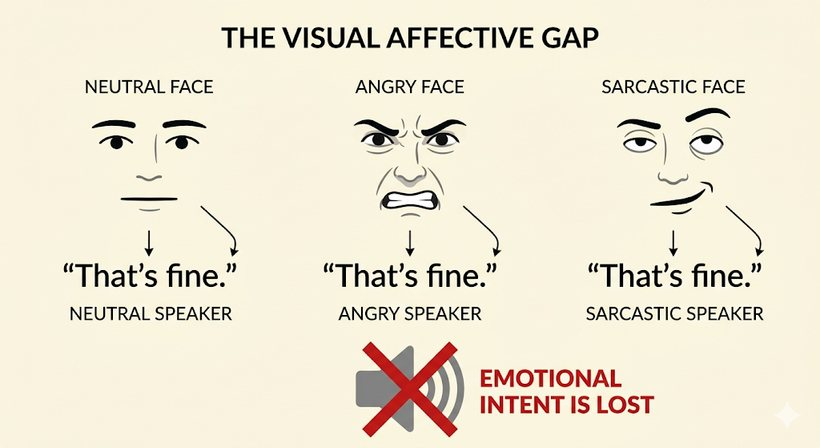
The second cycle narrowed the scope to the first of these, the emotion gap, and asked a sharper question.
What is the effect of combining emotion-coded text and visual sound rhythms on the cognitive load and emotional understanding of DHH users, compared with plain text captions?
02 · Design space
Where to sit between alert and expression
Before sketching anything we mapped the design space across five dimensions: interaction style, haptic intensity, representation, attention load, and purpose. Existing tools cluster around passive safety alerts, which come with high alert fatigue and dense information.
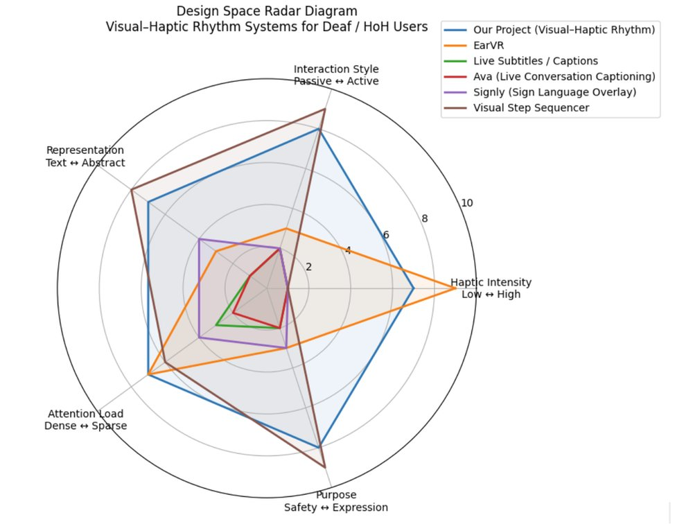
We chose the opposite corner: combine visual and tactile feedback to support active social rhythm and expression at a low information density, rather than one more functional alert system.
03 · Two prototypes
A screen, then a headset
Prototype 1: the laptop interface
A screen-based tool for online meetings, and the first thing to carry the name Reso. Two ideas: square blocks stacked like an equaliser to show sound frequency, and caption text that changes colour with emotion, red for angry and so on.
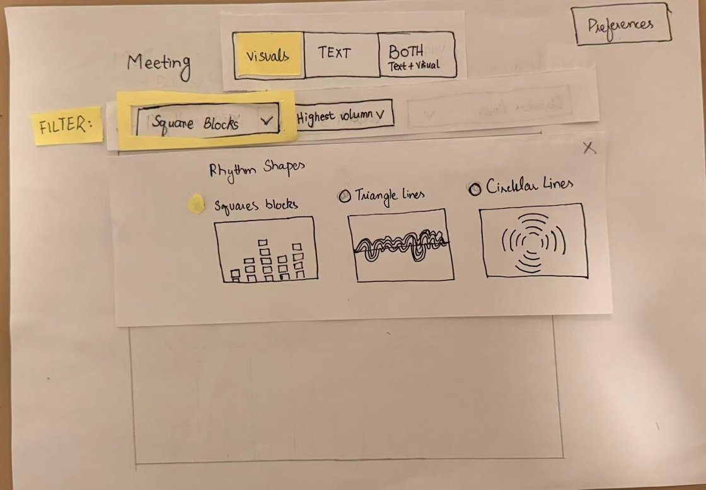
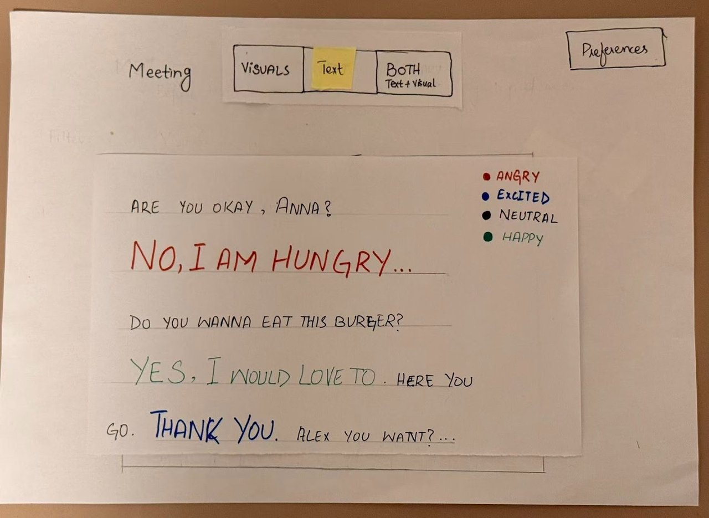
Prototype 2: the AR headset
Looking down at a laptop breaks eye contact and cuts you off from the room, so the second prototype moved off the screen. Captions pinned in space to the speaker's body, so you read while looking at their face, and haptic motors in the frame buzz left or right to show sound direction and volume.
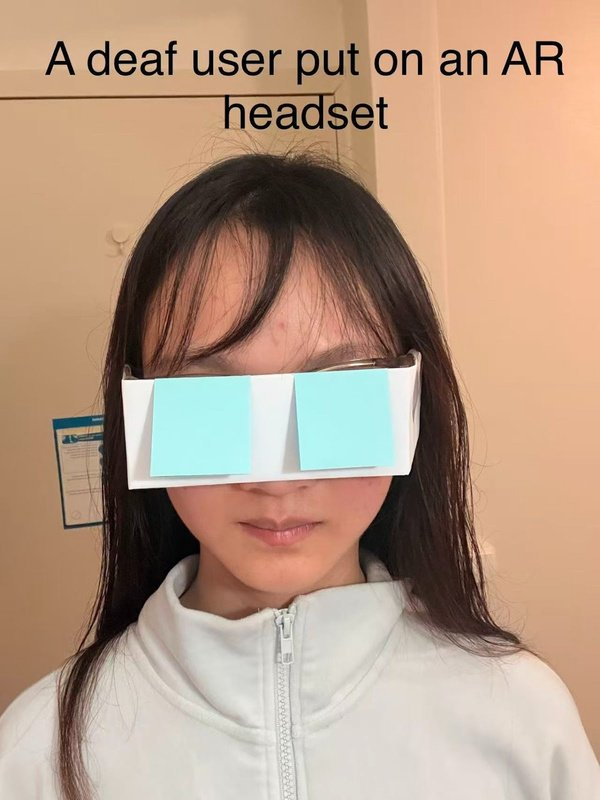
04 · The first study
Wizard of Oz, three users
We tested both prototypes on paper, with a facilitator playing the system, to check whether the visuals were intuitive and the interaction felt socially comfortable.
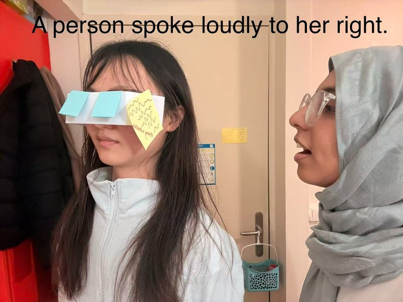
What worked
- The uncluttered UI was praised for keeping cognitive load and visual fatigue low
- Colour-coded emotion text read as highly intuitive
- A clear visual legend was the bridge that let people trust the abstract cues
What broke
- People needed a verbal explanation to get started, a cold-start problem
- The abstract blocks were not read as volume; users preferred text
- Missing Back and Test controls left people stuck
- Safety alerts were buried too deep in the settings
So we changed the design: added Back and Set buttons, replaced the abstract blocks with a line graph and prioritised text, moved safety alerts onto the main dashboard for one-tap control, and added explicit labels and an onboarding walkthrough for the cold start.
05 · One to two
The screen was the one to build
The headset was the more ambitious idea, but the laptop interface was the one that could be built and tested properly in the time available, so the second project cycle took it forward as a working tool.
Carried across
Emotion colour, the legend, and the low-load minimalist layout, the three things the first study confirmed.
Changed
The equaliser blocks became a continuous rhythm graph, labels and onboarding were added, and safety was surfaced. The AR and haptic path stayed a documented future direction.
06 · Reso, built
Two layers over the meeting
The built version runs as a transparent caption overlay plus a small control panel, so it sits on top of whatever meeting app is already open. The control panel handles speech capture, monitoring and display settings; the overlay stays out of the way during the call.
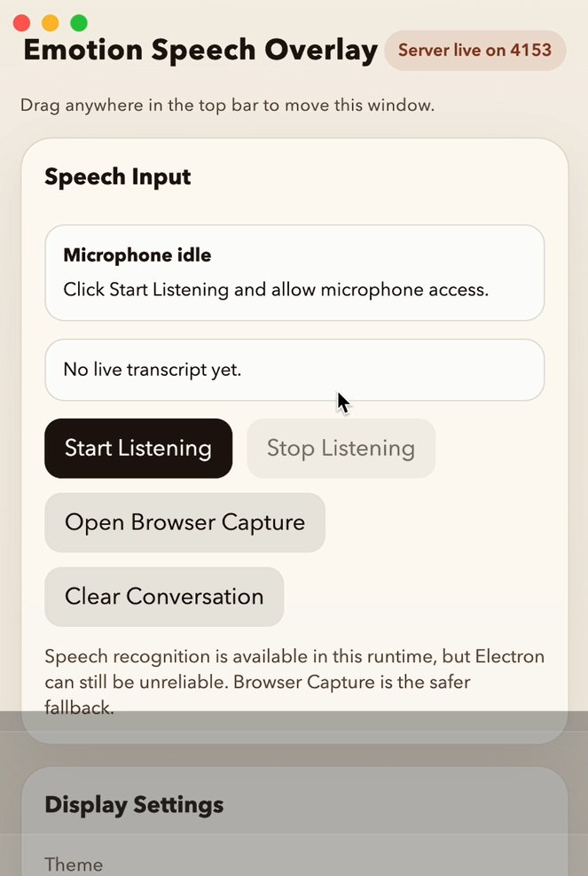
Emotion in colour
Every caption is tagged with one of six emotions (happy, sad, angry, surprised, neutral, fearful) and rendered in a matching colour: warm and vivid for activated states, cooler and quieter for calm ones. It is an interpretive cue, not a verdict, and the set is kept small on purpose so tone reads at a glance.
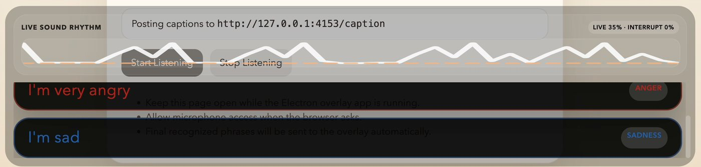
Rhythm as a second channel
A lightweight rhythm layer shows general changes in speaking intensity and pace, so a rise in energy or an interruption registers without reading. Emotion is assigned from the text of each caption, which let us test the visual design on its own before building a full audio pipeline. Under the hood, a browser page captures microphone speech and forwards final transcripts to a local overlay app that tags the emotion and renders everything.
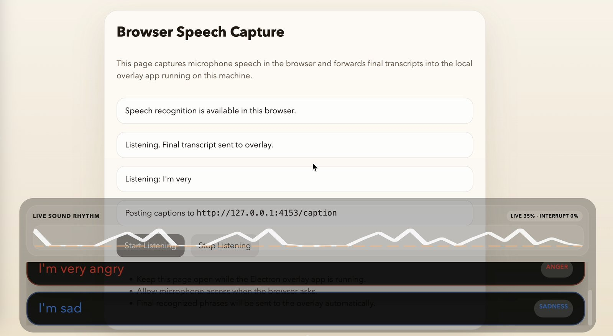
07 · The study
Reso against plain captions
A within-subjects study with 18 participants, aged 18 to 30, all hearing, used as proxy users for usability and cognitive load. It ran in the browser, hosted on GitHub Pages, so people took part on their own machines.
Each person did both conditions in counterbalanced order.
Condition A · baseline
Plain white captions below the video. No colour, no rhythm.
Condition B · Reso
Emotion-coloured captions and a live voice-intensity graph.
Two blocks of six muted clips, one speaker and one sentence each. After a clip, the participant picked the emotion they perceived from six options, as fast as they could. Reaction time and accuracy were logged; NASA-TLX ran after each block; a short debrief closed it out.
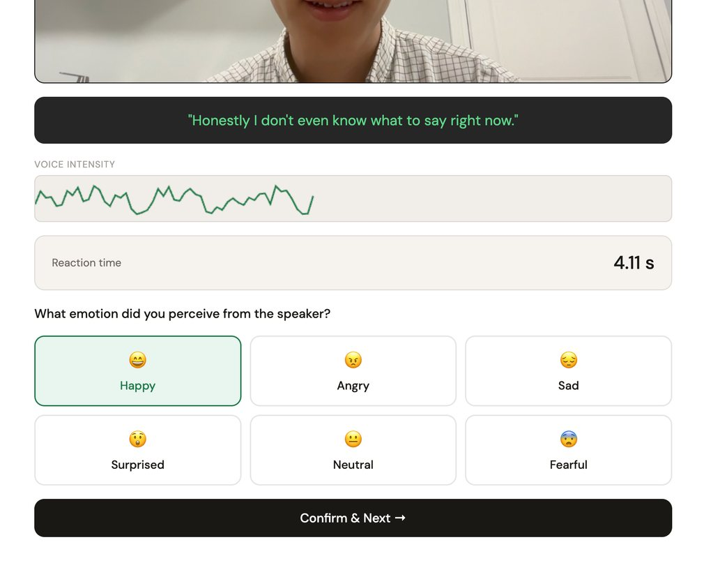
08 · Results
Colour helped. The graph didn't.
Emotion accuracy
50.9% → 63.0%
+12 points · significant, p < .05, medium effect
Reaction time
3.73s → 4.21s
+0.5s · not significant
Cognitive load (NASA-TLX)
39.1 → 44.1
+5 · not significant
The accuracy gain was statistically significant, a medium effect, and it concentrated exactly where text struggles most: Angry recognition rose 33 points and Sad 28 points. Surprised, already easy, dipped slightly.
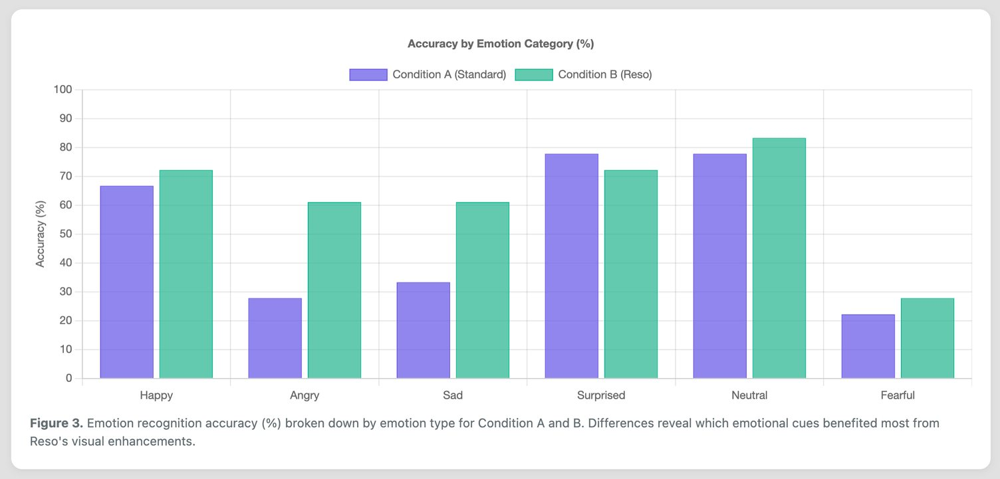
The rhythm graph backfired
Emotion colour was liked across the board, described as intuitive and reinforcing the caption. The voice-intensity graph was the opposite: most participants found it confusing or distracting and several ignored it entirely, because it had no legend or scale. Effort and frustration on NASA-TLX rose the most, which tracks.
When the subtitle is red, I think it strengthens the tone, or the person is angry. If it is blue and yellow, I think this sentence is peaceful and relaxed.
56% of participants preferred the plain baseline for its lower visual load; 33% preferred Reso for the extra context.
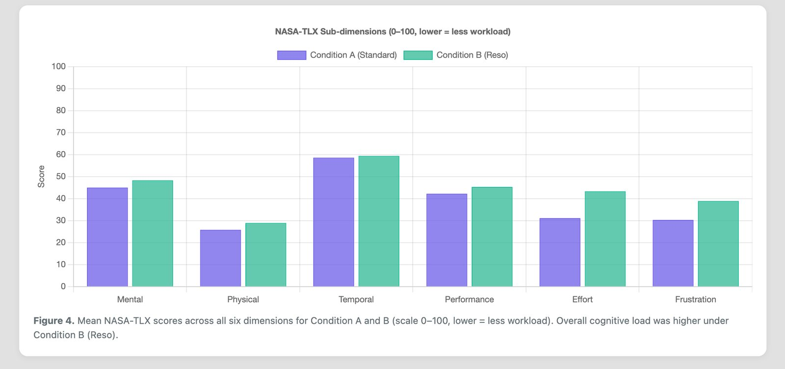
09 · What we learned
Visual enrichment only helps if it's instantly legible
The clearest lesson: an extra visual layer earns its place only when a user can tell what they are looking at without instruction. Colour passed that test; the raw waveform failed it. Part of the added load is also an artifact of the study itself, since the final product would keep emotion labels and drop the countdown timer, both of which we removed to make the task meaningful.
It is the same lesson the first study gave us, a cycle earlier: the abstract equaliser blocks were not read as volume then, and the abstract rhythm graph was not read as intensity now. Legible-at-a-glance is the bar, and the rhythm channel still has not cleared it.
Limits
- All 18 participants were hearing. Muted video simulates but cannot replicate caption fatigue, social exclusion, or the coping strategies DHH users build over time.
- One speaker, one sentence per clip. Real meetings have overlapping speech, turn-taking and constant attention demands.
- No participatory input from the DHH community, so the design carries hearing assumptions.
- Six colour categories flatten sarcasm, mixed feeling and cultural colour associations.
Next
Co-design with DHH users, let people define their own emotion-to-colour mapping, rebuild the rhythm layer with labels or replace it, test with live multi-speaker calls, and take the AR and haptic direction further from the second prototype.